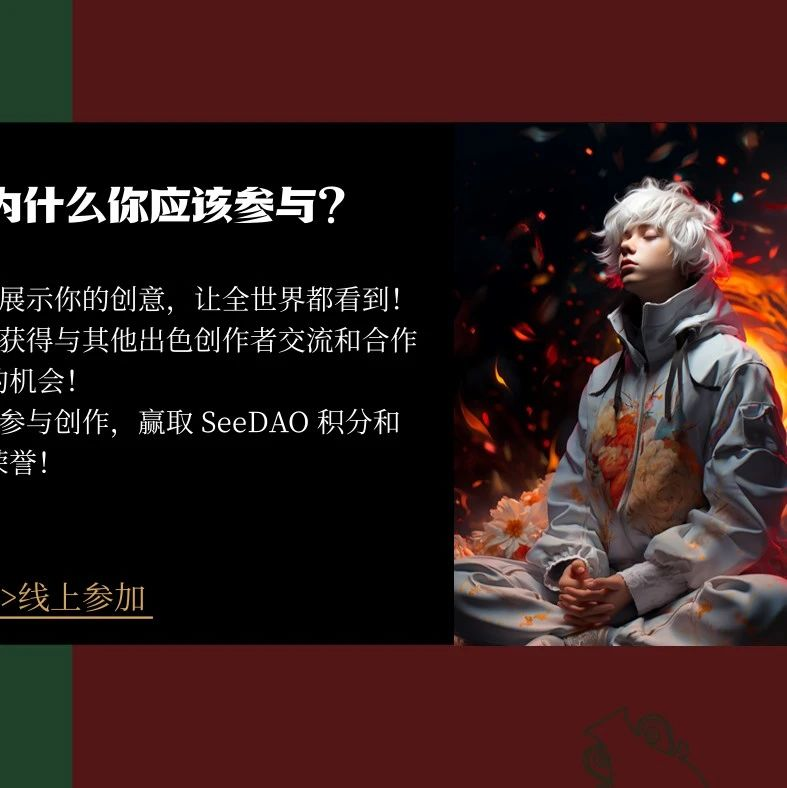

燃烧你的创意脑吧，Seed NFT头像二次创作活动进入投票阶段了！
作者: Scott
分类:
nft创作, SeeDAO Seed NFT
不要犹豫，时间有限！
从即日起至月底，展示你无法言喻的创意，用你的作品震撼世界！

https://opensea.io/assets/ethereum/0x30093266e34a816a53e302be3e59a93b52792fd4/18https://opensea.io/assets/ethereum/0x30093266e34a816a53e302be3e59a93b52792fd4/215https://opensea.io/assets/ethereum/0x30093266e34a816a53e302be3e59a93b52792fd4/231https://opensea.io/assets/ethereum/0x30093266e34a816a53e302be3e59a93b52792fd4/340https://opensea.io/assets/ethereum/0x30093266e34a816a53e302be3e59a93b52792fd4/382https://opensea.io/assets/ethereum/0x30093266e34a816a53e302be3e59a93b52792fd4/384https://opensea.io/assets/ethereum/0x30093266e34a816a53e302be3e59a93b52792fd4/434https://opensea.io/assets/ethereum/0x30093266e34a816a53e302be3e59a93b52792fd4/501https://opensea.io/assets/ethereum/0x30093266e34a816a53e302be3e59a93b52792fd4/525https://opensea.io/assets/ethereum/0x30093266e34a816a53e302be3e59a93b52792fd4/534https://opensea.io/assets/ethereum/0x30093266e34a816a53e302be3e59a93b52792fd4/535https://opensea.io/assets/ethereum/0x30093266e34a816a53e302be3e59a93b52792fd4/542从即日起至月底，展示你无法言喻的创意，用你的作品震撼世界！进群交流请加喵本scott微信 scoluo 。抓住这个机会，一展你的风采，让你的NFT头像不仅仅是一张图片，而是一个生动、独一无二的故事！活动介绍+AIGC基础工具及操作分享 Rebecca 阿车数据库 https://isclub.notion.site/Seed-NFT-a5b2a4198d5f4405bbb40ea65463fef2?pvs=4二创故事 https://noteforms.com/forms/story-hwrxs4二创图片 https://noteforms.com/forms/image-ywaz0e